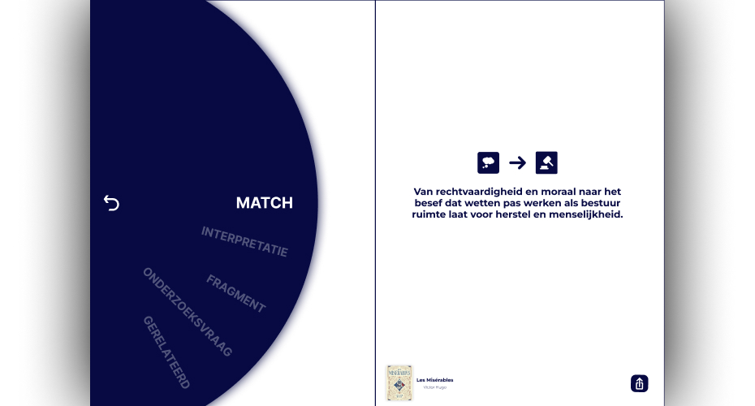
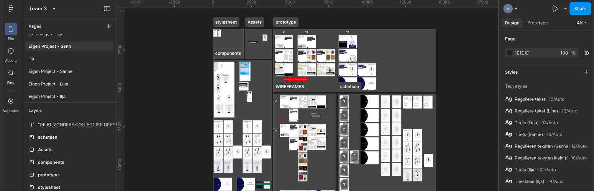
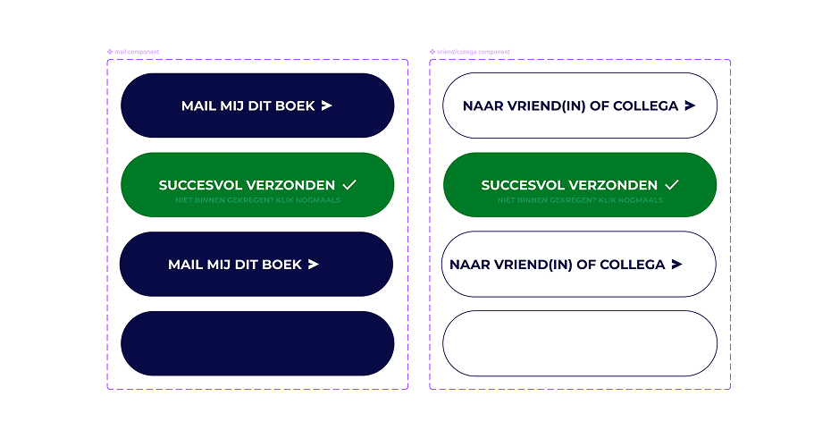
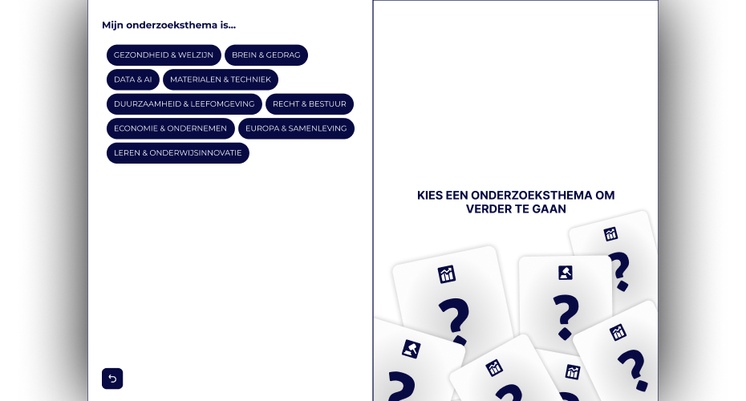

THE STORY
For this project, I designed a digital “matchmaker” around the Special Collections: a playful research tool that pairs students with unexpected themes. You first choose your own study area, but the system deliberately suggests something completely different – for example, a topic from law and governance while you study economics. By drawing and redrawing cards, you discover research ideas and book connections you wouldn’t quickly find yourself, turning the collection into an active source of inspiration instead of a static archive.

CHALLENGES
The biggest challenge was to keep the experience both relevant and attractive at the same time. Because each side of the digital “book” could change independently, the prototype allowed for many combinations – but that also meant that some felt visually strong yet content-wise irrelevant, or the other way around. Through many iterations on layout, wording and matching logic, I worked towards a balance where the unexpected match feels surprising, but still meaningful for the student in front of the screen.


